Raspberry Pi Security Camera Project
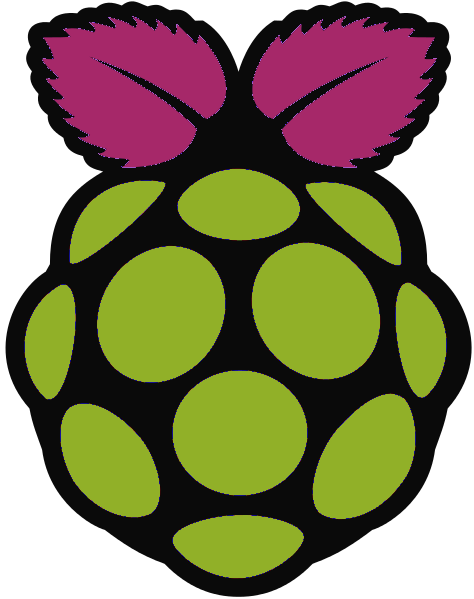 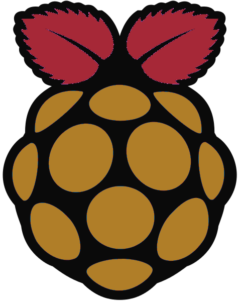 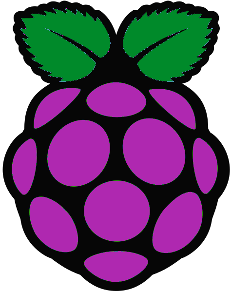
Μπαίνουμε με ssh στο Raspberry και ξεκινάμε τον cron, ο οποίος τρέχει το script για το uploading των στιγμιοτύπων, και το Motion.
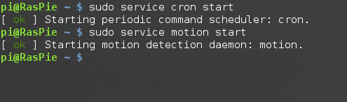
Εικόνα από τον cron. Φαίνεται ότι το script για το uploading καλείται κάθε 1 λεπτό για να ελέγξει για νέες φωτογραφίες.
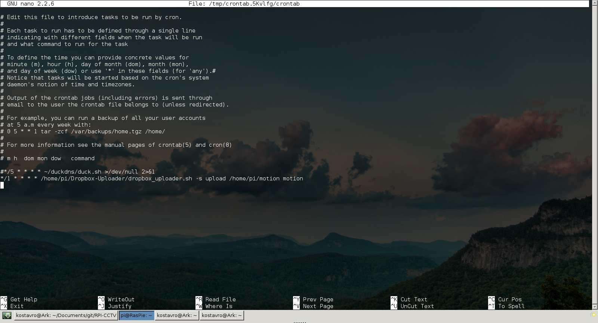
Στην επόμενη εικόνα φαίνεται το πρώτο email που στέλνει το Motion μόλις ξεκινάει, ώστε να βεβαιωθούμε πως όλα λειτουργούν.
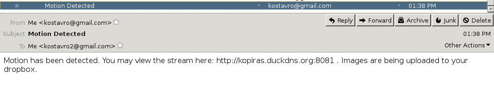
Μπαίνοντας στο link που υπάρχει στο προηγούμενο email (και αφότου έχει γίνει το κατάλληλο port forward) βγαίνουμε σε μία σελίδα που ζητάει τα credentials για το stream.
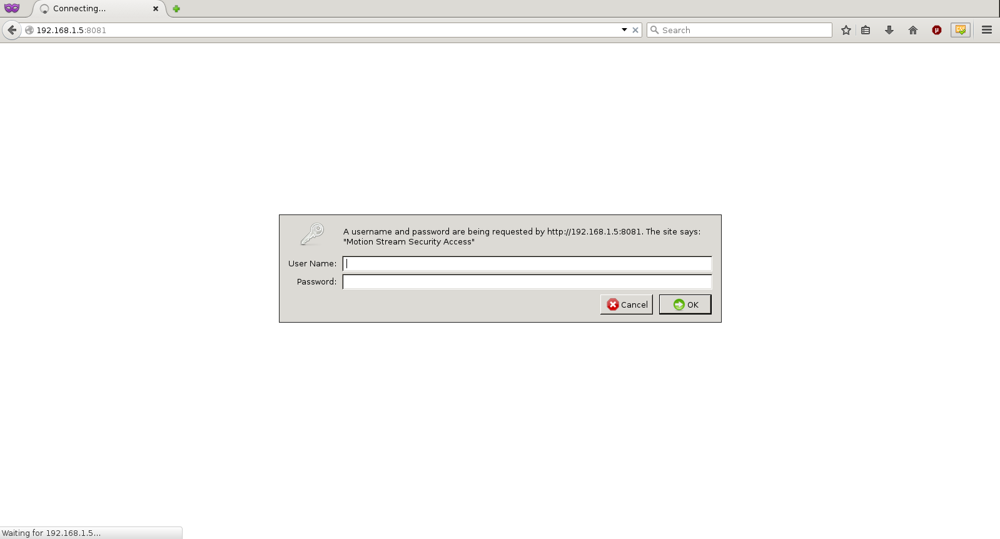
Βάζουμε τα credentials που έχουμε ορίσει στο motion.conf.
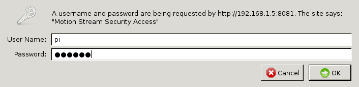
Εμφανίζεται το stream.
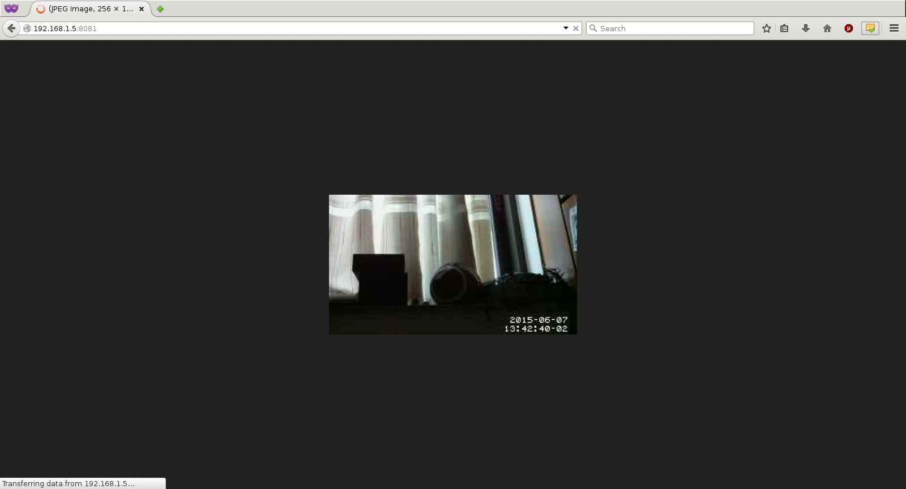
Εδώ γίνεται ένας απλός έλεγχος ότι λειτουργεί η ανίχνευση κίνησης.
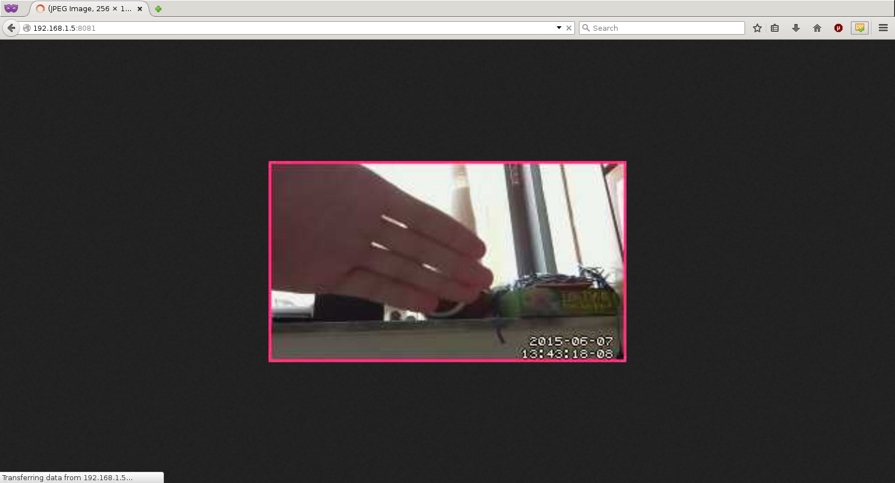
Εντοπίζεται η κίνηση και αμέσως στέλνεται ένα νέο email.

Παρατηρούμε ότι οι φωτογραφίες έχουν ήδη αρχίσει να ανεβαίνουν στο dropbox.
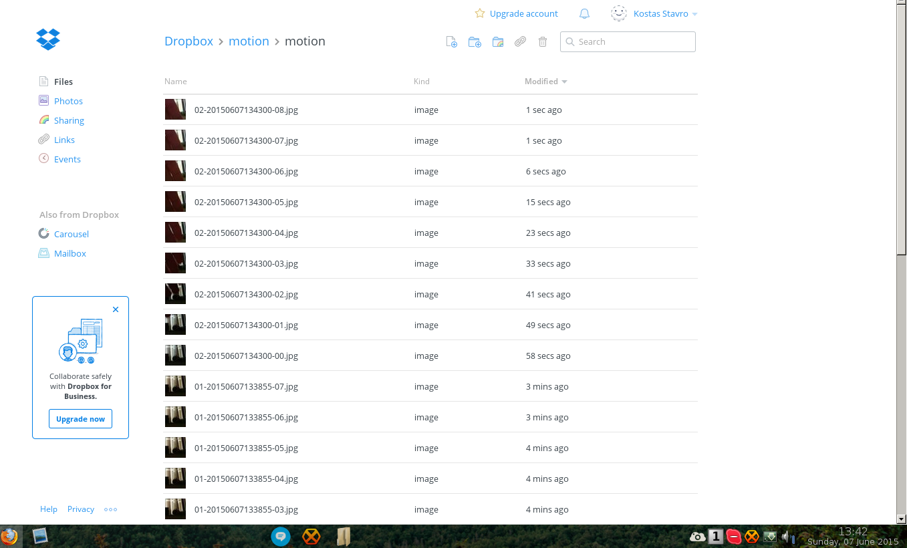